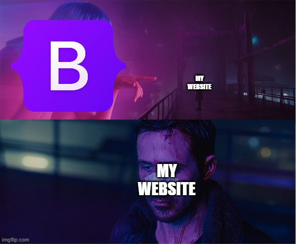

Райан Гослинг
Актер - Музыкант - Продюсер - Режиссер
Актер - Музыкант - Продюсер - Режиссер
Ра́йан То́мас Го́слинг - канадский актёр и музыкант. Двукратный номинант на премию «Оскар» (2007, 2017), лауреат премии «Золотой глобус» (2017), двукратный лауреат премии «Спутник» (2007, 2012) и лауреат премии Национального совета кинокритиков США (2006). В 2008 году совместно с Заком Шилдсом основал музыкальную группу Dead Man’s Bones и участвует в ней по сей день.
«Фанатик», «Отсчёт убийств», «Соединённые штаты Лиланда», «Дневник памяти», «Останься», «Перелом», «Всё самое лучшее», «Валентинка», «Эта дурацкая любовь», «Место под соснами», «Мартовские иды», «Охотники на гангстеров», «Только Бог простит», «Игра на понижение», «Славные парни», «Ла-Ла Ленд», «Бегущий по лезвию 2049». Стал широко известен после релизов драмы «Полу-Нельсон» и нео-нуара «Драйв».
Великолепный гонщик — при свете дня он выполняет каскадерские трюки на съёмочных площадках Голливуда, а по ночам ведет рискованную игру. Но один опасный контракт — и за его жизнь назначена награда. Теперь, чтобы остаться в живых и спасти свою очаровательную соседку, он должен делать то, что умеет лучше всего — виртуозно уходить от погони
Это история любви старлетки, которая между прослушиваниями подает кофе состоявшимся кинозвездам, и фанатичного джазового музыканта, вынужденного подрабатывать в заштатных барах. Но пришедший к влюбленным успех начинает подтачивать их отношения.
Дакен Жандос
Студент: Astana it University
ОП: Cyber Security
Группа: cs-2125
Email: daken.zhandos.04@gmail.com
